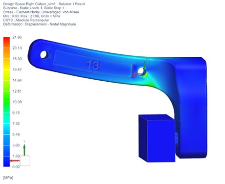
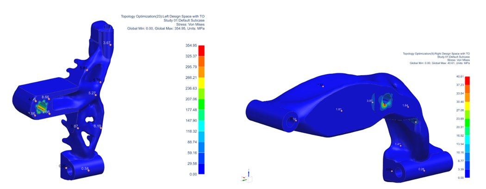
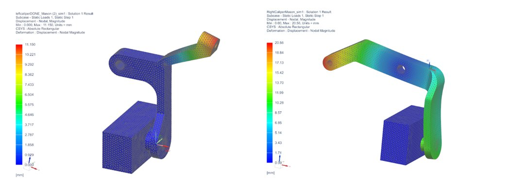
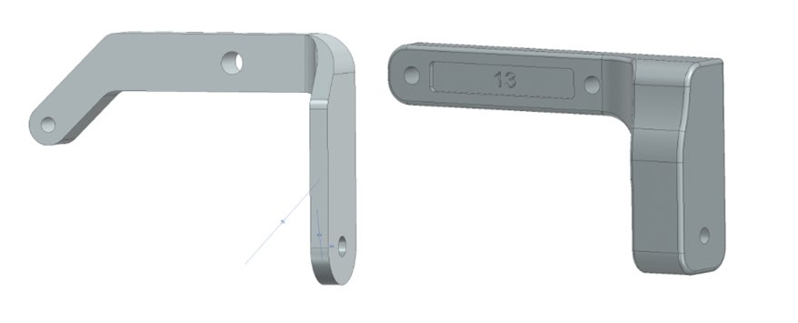
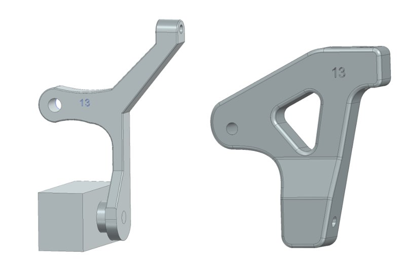
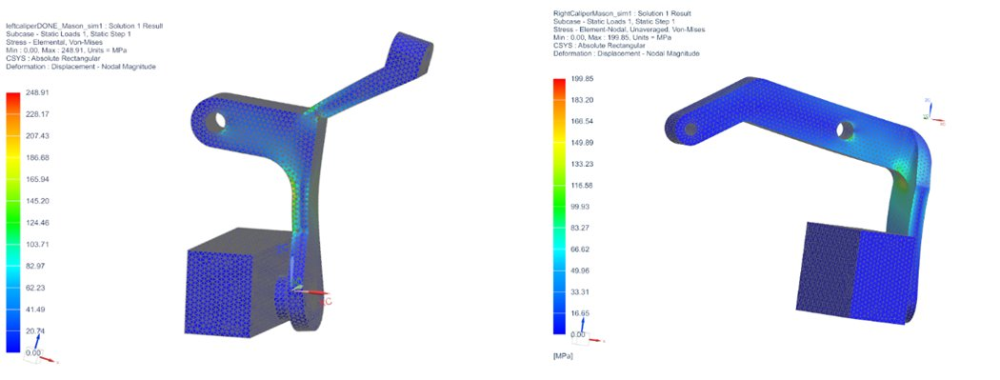
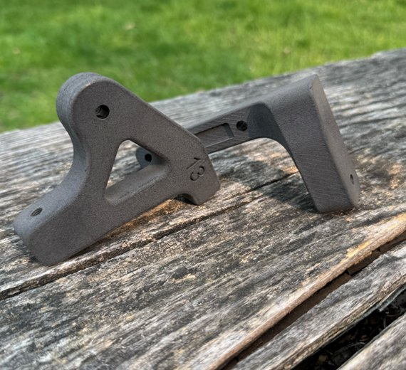

06 — Mechanical Design · ME 240
A full product development cycle — from needs analysis and quantitative metric definition through FEA, topology optimization, and Nylon 12 printing — carried across two design iterations to meet ISO 4210 bicycle brake performance standards.
Objective
A brake caliper must do one thing well: reliably stop a bicycle within a defined distance. This project ran the full engineering design process — defining quantitative performance targets from ISO standards and benchmarking, generating concepts through Castigliano's method hand calculations, running topology optimization and FEA in Siemens NX, fabricating in Nylon 12, and physically testing under real conditions.
The project involved two complete design-build-test-iterate cycles. The first caliper passed five of six targets but failed to stop a bicycle — it had been over-optimized for mass at the expense of stiffness. The second design reversed those priorities. It worked.
Design Targets
| Metric | Ideal | Marginal | Source |
|---|---|---|---|
| Cost | $15.00 | $24.00 | Benchmark analysis |
| Stopping distance at 25 kph | 13.38 m | 15 m | ISO 4210-2 |
| Weight | 300 g | 400 g | Benchmark analysis |
| Volume of printed filament | 297 cm³ | 396 cm³ | Density calculation |
| Number of individual parts | 5 | 15 | ETH Zürich reference |
| Bottom-out force | 100 N | 95 N | Engineering analysis |
Ideal stopping distance of 13.38 m derived from ISO 4210-2 formula with m=100 kg, v=25 kph, μ=0.6, and component geometry. Bottom-out force from Castigliano's method cable-pull displacement analysis.
Load Path Analysis
Design space FEA applied a 100 N tension force at the brake cable holes, pivot constraint at the pivot holes, and combined normal and shear loads at the brake pad locations — representing the full contact force during braking. Topology optimization then identified the primary load paths: from the pivot hole to the cable attachment, and from the pivot hole to the brake pad contact point.
Stress singularities appeared around the pivot holes in both FEA and TO. These were recognized as numerical artifacts of the constraint assumptions, not genuine failure predictions — an important distinction when interpreting FEA results in design decisions.


Design space Von Mises stress — max 21.96 MPa at pivot (left) · topology optimization material removal results, left and right arms (right)

Arm deflection comparison — left and right caliper arms (mm). High deflection under braking load directly reduces clamp force and increases stopping distance.
Iteration 1
The first iteration prioritized mass reduction above all else — thin arms following the TO load paths, minimal cross-section, large fillets at geometry transitions. Cost, weight, volume, and aesthetics all passed. However, during pre-test loading, one arm snapped. The caliper was too flexible to generate sufficient clamp force: stopping distance came to 46.48 m — more than triple the marginal limit. The bottom-out force of 80 N was below the 95 N marginal value.

Iteration 1 CAD — simple L-bracket geometry prioritizing mass minimization. Arms proved too thin to generate sufficient braking force.
| Metric | Ideal | Marginal | Iter. 1 | Status |
|---|---|---|---|---|
| Cost | $15.00 | $24.00 | $8.20 | PASS |
| Stopping distance | 13.38 m | 15 m | 46.48 m | FAIL |
| Weight | 300 g | 400 g | 27.2 g | PASS |
| Volume | 297 cm³ | 396 cm³ | 26.71 cm³ | PASS |
| Aesthetic satisfaction | 80% | 50% | 85% | PASS |
| Bottom-out force | 100 N | 95 N | 80 N | FAIL |
Iteration 2
The redesign made the opposite tradeoffs: overall geometry roughly doubled in mass, material was concentrated near the brake pad contact points and pivot holes, and the arm cross-sections were substantially thickened. A truss-like structure was introduced for the left caliper and the right caliper was made more robust throughout. The goal was not minimalism — it was generating enough clamp force to stop a bicycle.

Iteration 2 CAD — thickened arms and material concentrated at high-load regions

Von Mises stress distribution — left and right caliper arms under braking load
| Metric | Ideal | Marginal | Iter. 1 | Iter. 2 | Status |
|---|---|---|---|---|---|
| Cost | $15.00 | $24.00 | $8.20 | $21.40 | PASS |
| Stopping distance | 13.38 m | 15 m | 46.48 m | 13.3 m | MEETS IDEAL |
| Weight | 300 g | 400 g | 27.2 g | 139.7 g | PASS |
| Volume | 297 cm³ | 396 cm³ | 26.71 cm³ | 138.3 cm³ | PASS |
| Aesthetic satisfaction | 80% | 50% | 85% | 80% | PASS |
| Bottom-out force | 100 N | 95 N | 80 N | 150 N | EXCEEDS IDEAL |
Final Physical Result
The final Iteration 2 calipers were printed in Nylon 12 via SLS and mounted to a bicycle for ISO 4210 compliance testing. During the test, they successfully stopped a bicycle cruising at 25 kph in 13.3 m — meeting the ideal stopping distance target and producing a bottom-out force of 150 N, well above the 100 N ideal. The test confirmed that stiffness, not mass minimization, is the governing design requirement for a functional brake caliper.

Final Nylon 12 SLS-printed calipers — left and right arms, Iteration 2
Reflection
The first design optimized aggressively for mass and produced a part that could not stop a bicycle. The redesign made the opposite tradeoffs — and worked. The lesson: verify functional performance against the primary metric before lightweighting. A lightweight brake that doesn't brake isn't a brake.
Topology optimization was useful for identifying load paths but requires engineering judgment to interpret correctly. Stress singularities around pivot holes look alarming in simulation — they do not indicate real failure in a manufactured part with proper geometry. Distinguishing numerical artifacts from real failure modes is a critical skill.
The final design's high factor of safety reveals material overuse. Future work would use topology optimization not to reduce weight arbitrarily, but to redistribute material more precisely — concentrating it near the pivot and pad contacts while removing it from low-stress regions on the sides, bringing cost back under the marginal target.